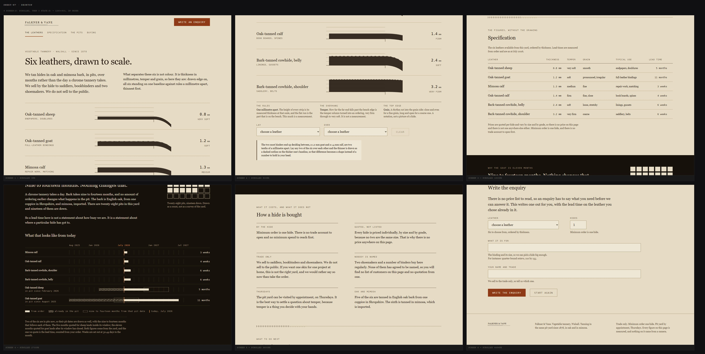

A website-building skill for coding agents
Websites, not website-shaped output.
SiteSmith chooses a visual direction, builds in your actual stack, and checks the result in a browser before it calls the site done.
- 3 / 3
- cleared the fixed bar
- 8.21
- portfolio score
- 2
- assignment-blinded reviewers

The ordinary workflow
Three commands. One finished site.
-
01
init
Read the brief, detect the stack, choose a direction, and set density, motion, and boldness.
-
02
build
Use the matching framework adapter, design tokens, real assets, and the right interaction states.
-
03
audit
Render 375, 768, and 1440. Check axe, links, console errors, overflow, and the screenshots themselves.
Current proof
Three sites that earned their place.
The nine v1 pages are still useful test fixtures. They are not the showcase. These three were built by separate agents from unrelated briefs, then scored by two reviewers who did not know which page they had.
Why the output changes
Direction before decoration. Evidence before done.
Most website skills are rules. SiteSmith is a release loop.
It routes marketing, e-commerce, and product UI differently. It records a design direction before CSS. It makes variation visible through three dials. Then it verifies the built page in the browser.
Read the skill- Density
- 7
- Motion
- 3
- Boldness
- 8
- Not presets
- The brief must justify each value. The values change candidate selection and review.
The evidence boundary
Strong claims need a narrow edge.
Three independent builds cleared 8.
Separate agents, unrelated briefs, the same fixed seven-criterion rubric, and two assignment-blinded reviews per build.
That SiteSmith beats every alternative.
The isolated 18-run skill-versus-control experiment has not run. No head-to-head result is being implied here.
Open-source lineage
Four strong inputs. One rewritten pipeline.
SiteSmith v2 is original work built on ideas from four openly licensed projects. Credit stays visible because the repository should be stronger than its sources without pretending it appeared from nowhere.
Install from main
Put the release loop in your agent.
Install the Claude plugin, or generate Claude, Codex, and Cursor provider packs from the same canonical pipeline.